Integrated Reporting Intervention System — research prototype
See the connections. Restore what matters.
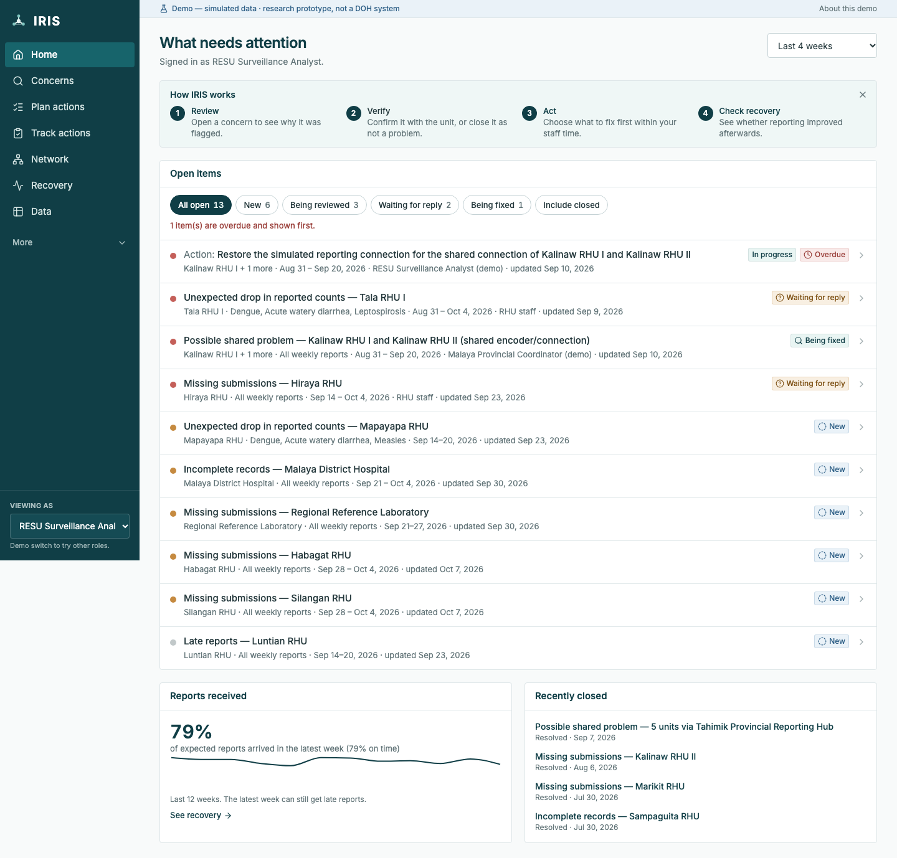
IRIS helps the people who manage disease-reporting networks notice when reports stop arriving, find out why, decide what to fix first, and check whether reporting recovered.
It is designed for Regional Epidemiology and Surveillance Units (RESUs), provincial coordinators, Rural Health Unit (RHU) staff and data managers. IRIS compares the reports expected from each unit with those that arrived, and raises a concern when something looks unusual: missing or late reports, blank forms, or a sudden drop in case counts.
Important: IRIS is a research prototype. It is not an officially deployed Department of Health system and is not endorsed by any government agency. Every province, municipality, facility, person and relationship in this guide is simulated, and no patient information is used.
The menu on the left lists the main pages. Less frequently used pages are under More. On a phone the menu opens from the button at the top right (see section 14).
| Page | Question it answers |
|---|---|
| Home | What needs attention right now? |
| Concerns | Which reporting problems were found, and why? |
| Plan actions | With the staff time we have, what should we fix first? |
| Track actions | What happened after we acted? |
| Network | How are reporting units connected? Could problems be linked? |
| Recovery | Is reporting getting better? |
| Data | What do the records actually show, and what is missing? |
| More → Model evaluation | How well does IRIS spot real problems? |
| More → Data sources | Where did the data come from, and can it be trusted? |
| More → Settings, Help | Display options, accessibility, and definitions. |
What you see depends on your role. In this demo you can switch roles with the Viewing as selector at the bottom of the menu. That switch exists only for trying the demo; it is not real sign-in security.
| Role | Demo users | Typical work |
|---|---|---|
| RHU reporting staff | Hiraya RHU Encoder, Kalinaw RHU I Nurse | Send missing reports, answer questions about their unit, see actions planned for them. |
| Provincial coordinator | Malaya, Masagana and Tahimik Provincial Coordinators | Review concerns in their province, ask units questions, plan and track actions. |
| RESU analyst | RESU Surveillance Analyst, RESU Epidemiologist | Everything: region-wide review, checking for new concerns, approving plans, model evaluation. |
| Administrator / data manager | Data Manager | Import and validate data files, edit reporting-unit details, review the activity log. |
A thin blue line at the top of every page reminds you that the data is simulated. Select “About this demo” to read the limitations.
Home is the starting point. It lists everything open that you are responsible for, with the most urgent items first: overdue items, then high priority.
For RHU staff: Home shows Your to-do list with each missing report and any question from your coordinator. See section 14.
A concern is a possible reporting problem that IRIS found in the data. The Concerns page lists them all.
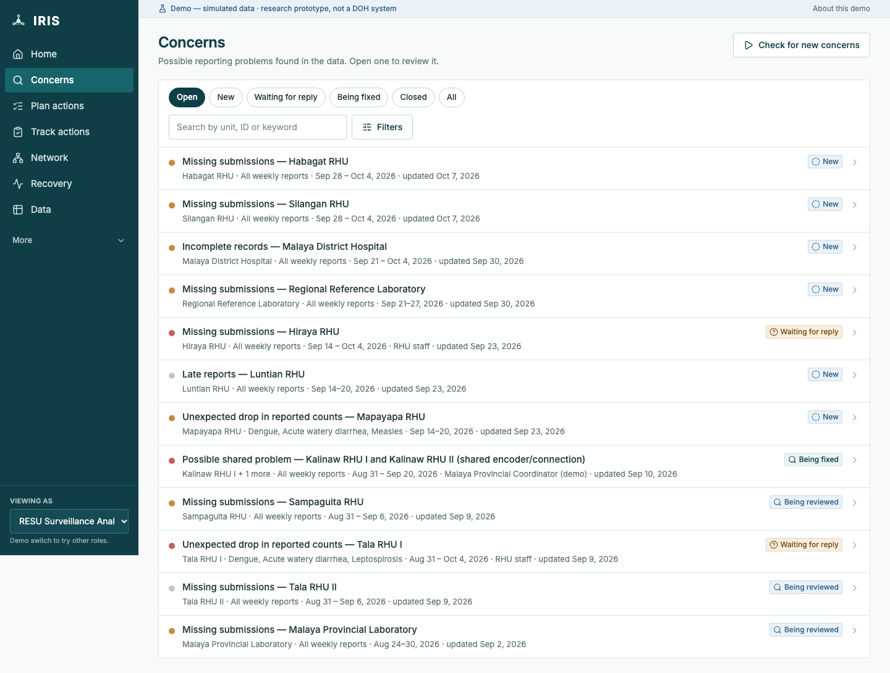
C-0010) or a word.| Type | Meaning |
|---|---|
| Missing submission | Expected reports did not arrive. |
| Late report | Reports arrived after the due date (weekly reports are due Tuesday 5 pm after the week). |
| Incomplete record | Reports arrived with blank fields or an incomplete form. |
| Unexpected drop in counts | Reports arrived, but case counts were far below the unit's recent weeks. |
| Possible shared problem | Several connected units had problems at the same time, which may point to a common cause such as a shared hub or internet connection. |
Opening a concern shows a progress bar with four steps (Review → Verify → Act → Close), a sentence saying what to do next, and one main button for that step.
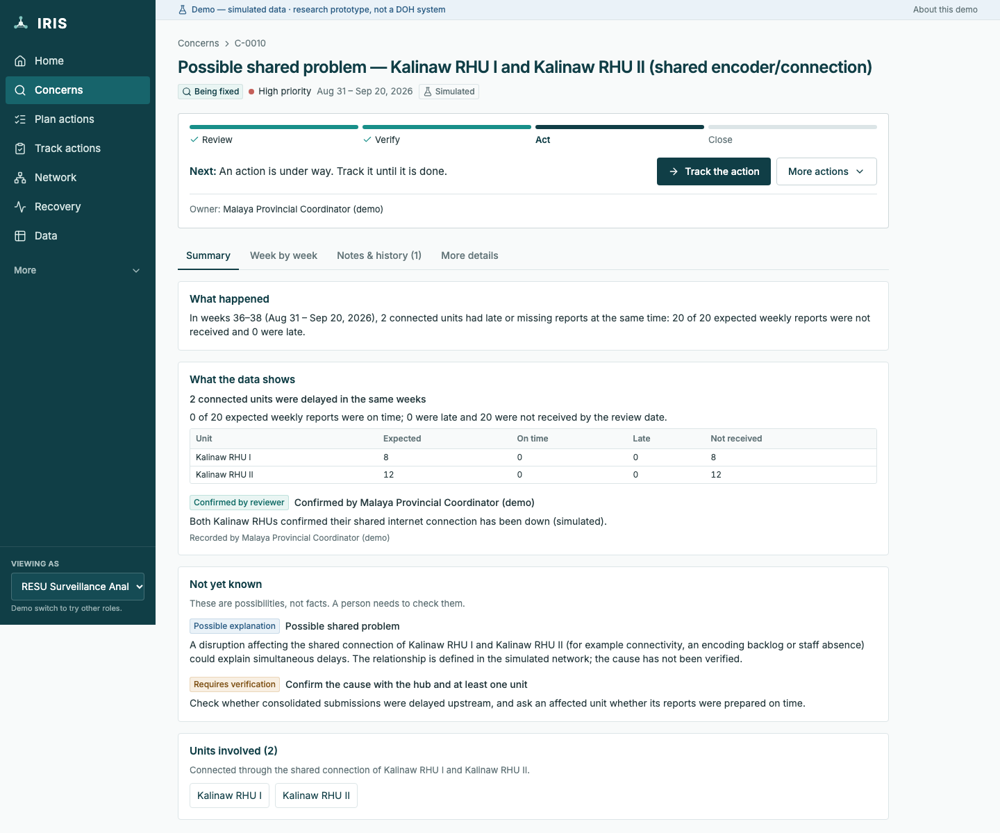
The page has four tabs:
The main button changes with the step: Start review, then Confirm it's a real problem, then Plan an action or Track the action. All other options are in More actions.
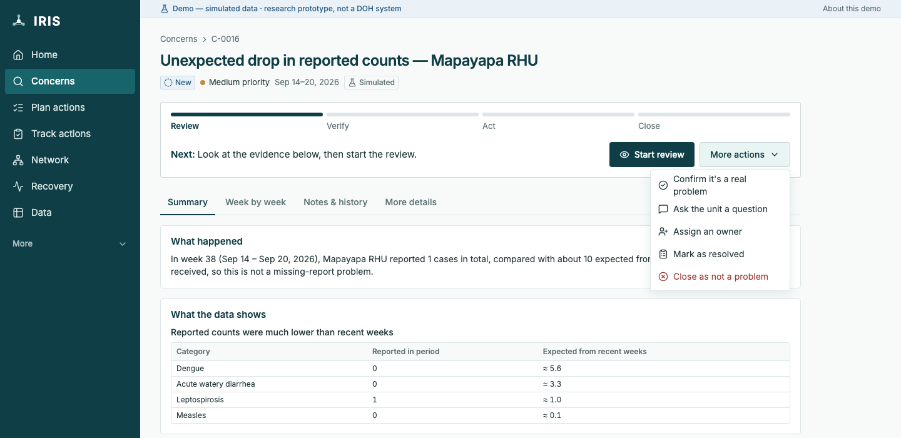
| Action | What it does |
|---|---|
| Start review | Tells others you are looking at it. |
| Ask the unit a question | Sends a question to the reporting unit; it appears in their to-do list. Status becomes Waiting for reply. |
| Confirm it's a real problem | Records that the problem was verified. A short reason is required. |
| Assign an owner | Makes one person responsible, with an optional due date. |
| Mark as resolved | Closes it with a summary of what fixed it. Required. |
| Close as not a problem | Closes a false alarm. A reason is required. It can be reopened later. |
New not looked at yet · Being reviewed someone is checking · Waiting for reply a question was sent to the unit · Being fixed confirmed or assigned · Resolved closed with a summary · Not a problem closed as a false alarm.
The Week by week tab shows each affected unit as a row and each week as a column. Shaded column headings mark the weeks in this concern.
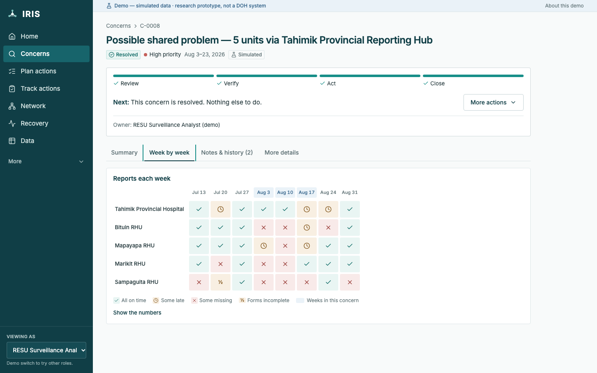
| Symbol | Meaning |
|---|---|
| ✓ (green) | All expected reports arrived on time. |
| Clock (amber) | Some reports were late. |
| ✕ (red) | Some reports did not arrive. |
| ½ (amber) | Reports arrived but forms were incomplete. |
For a drop in counts, the grid shows the number of cases each week instead; red cells are less than half of what was expected. Select Show the numbers for the exact counts.
Simulation answer key: under More details, the demo can show what was really injected into the simulated data, so you can check your judgement. Turn it off in Settings.
When several problems compete for limited staff time, this page suggests which corrective actions to do first.
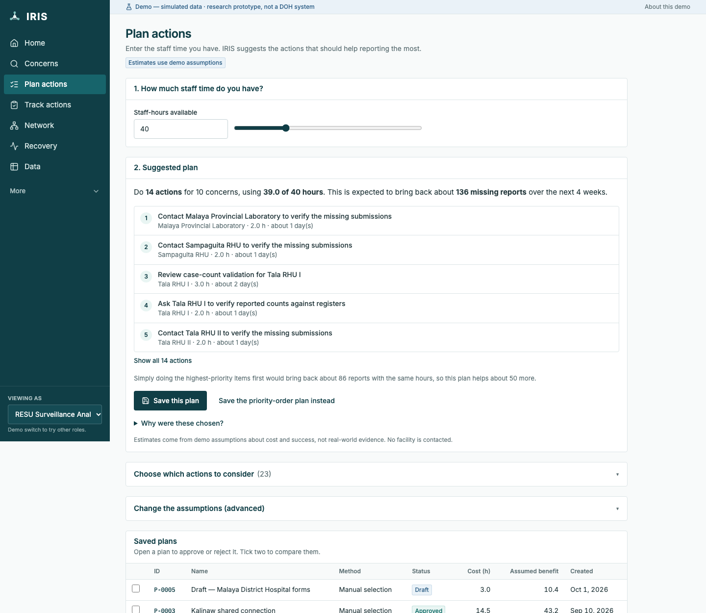
Choose which actions to consider lets you leave actions out. Change the assumptions lets advanced users adjust estimated hours and chances of success.
The estimates come from demonstration assumptions, not evidence of real-world effectiveness. Approving a plan does not contact any facility.
Approved actions appear here until they are closed. Each one moves through Planned → Approved → Done → Outcome.
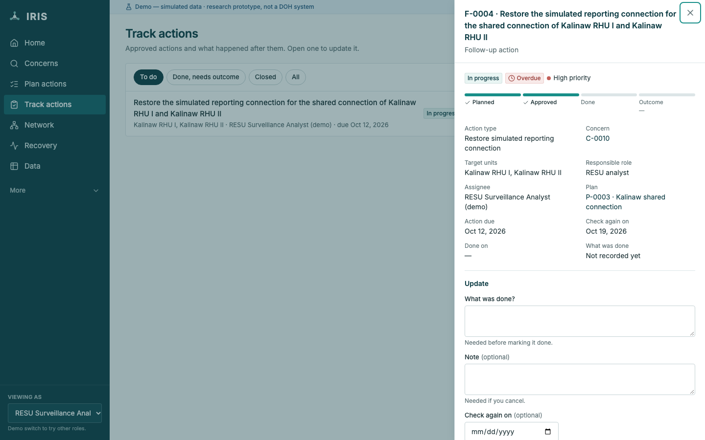
Reporting can improve for reasons unrelated to an action, so a result records what was seen, not proof that the action caused it.
The Network page shows how reporting units are connected, which helps you judge whether problems in several places might share a cause.
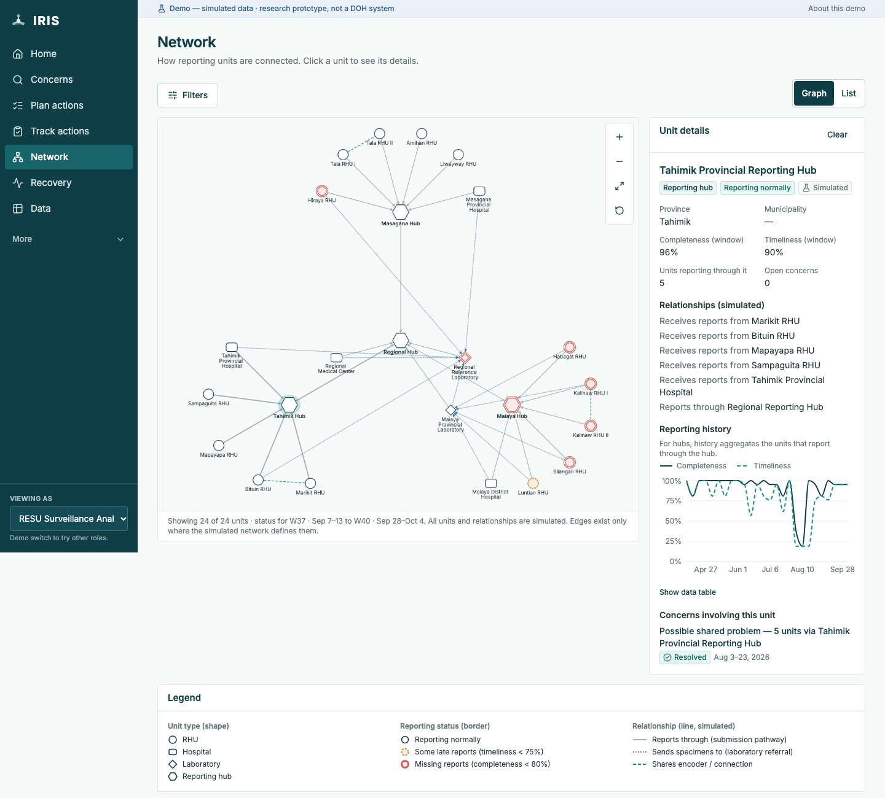
Recovery answers “is reporting getting better, and did our actions help?”
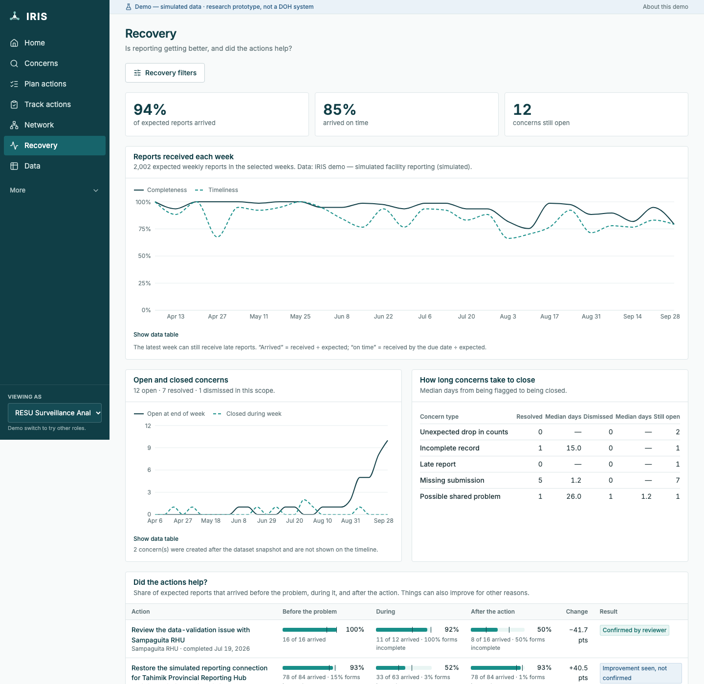
The Data page lets you look at the records behind every concern.
The four tabs are Reports (select a row for its details and change history), Trends (one small chart per disease or province, on the same scale), What's missing and About this data (source, coverage, limitations and field definitions).
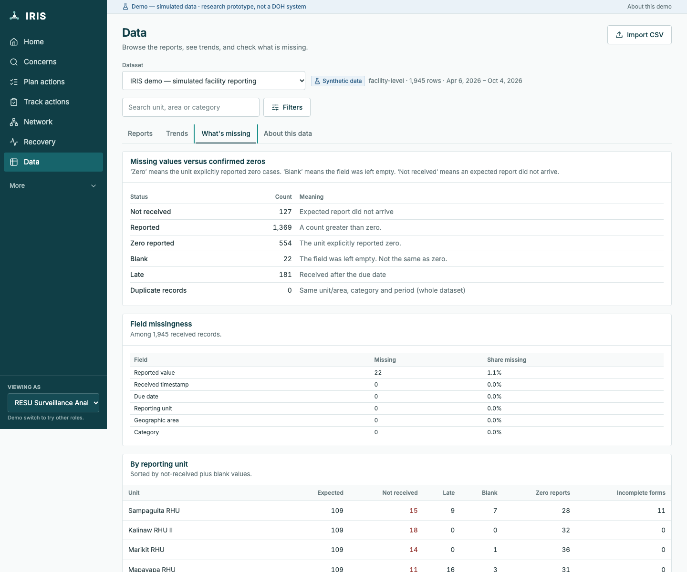
Blank is not zero. Zero reported means the unit said there were no cases. Blank means the field was left empty. Not received means the report never arrived. IRIS never treats a blank or a missing report as zero.
Analysts and administrators can add their own data from Data or Data sources using Import CSV. There are four short steps, and nothing is saved until you confirm.
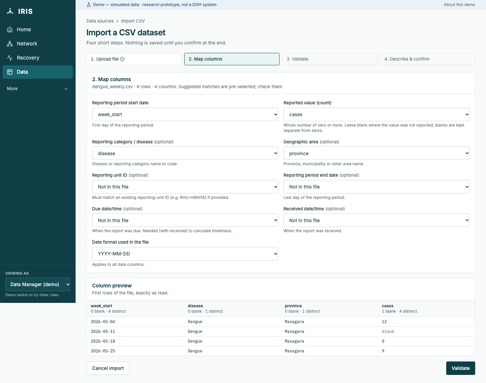
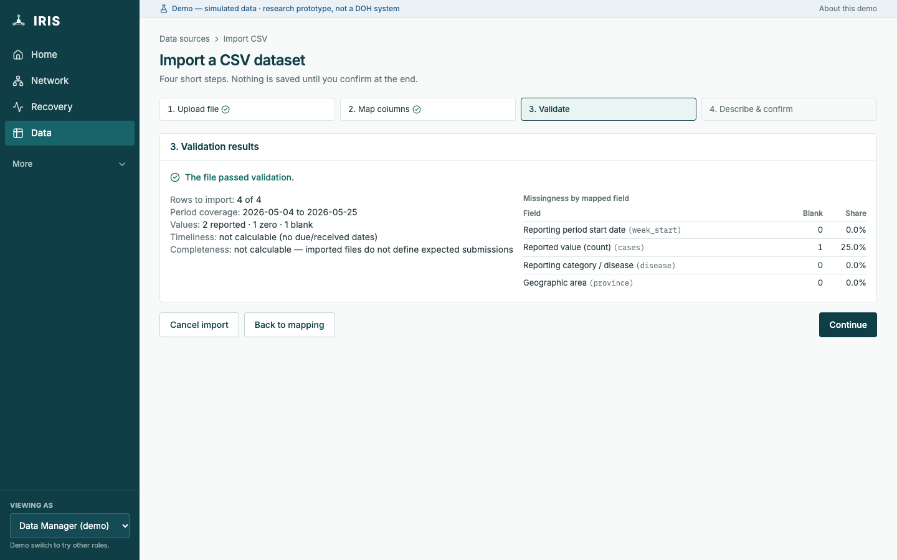
IRIS has three ways of spotting reporting problems. This page tests them on simulated data where the true answer is known, so you can see how often each is right.
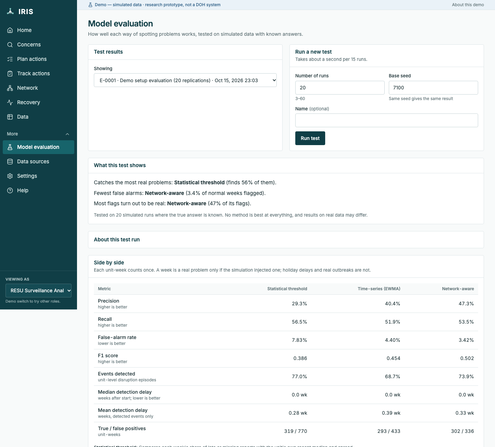
| Method | How it works |
|---|---|
| Statistical threshold | Compares each week with the unit's own recent weeks. |
| Time-series (EWMA) | Smooths the same signal over time to catch problems that last several weeks. |
| Network-aware | Also checks whether connected units had problems in the same week. |
No method is best at everything: one may catch more problems while another raises fewer false alarms. Results are calculated from tests that were actually run, never typed in. Analysts can Run a new test, and More results breaks them down further.
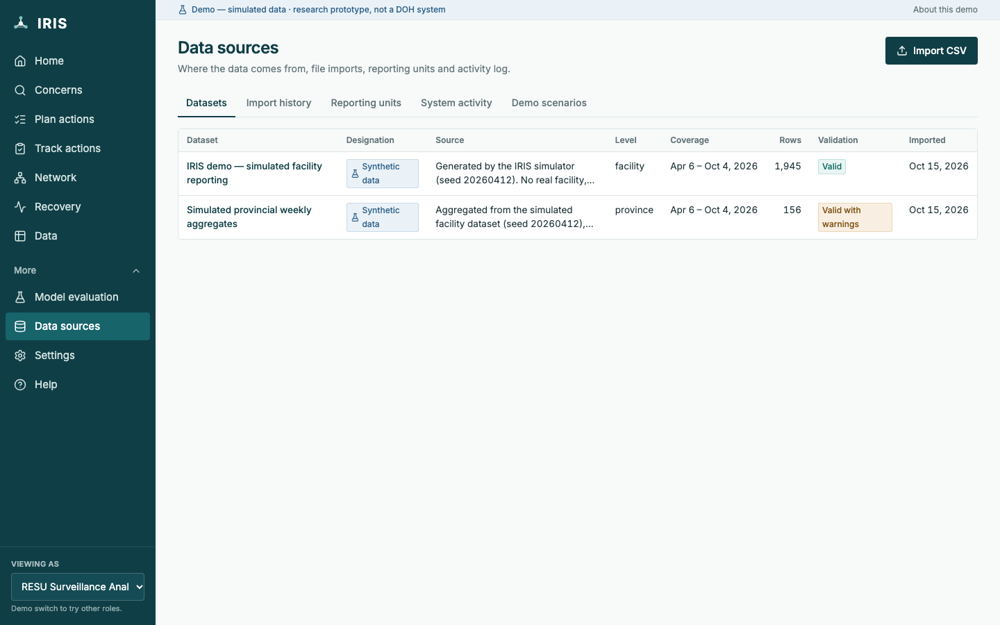
Data sources (under More) has five tabs: Datasets, Import history (including rejected files and why), Reporting units (administrators can edit names, notes and status), System activity (every change, who made it and when) and Demo scenarios (choose which simulated problems to include and reset the demo).
Settings (under More) includes the role switch; table density and date format; larger text, reduced motion, underlined links and a stronger keyboard focus outline; the simulation answer key; and Reset demo data, which discards all demo changes.
Every page works on a phone. The menu opens from the ☰ button, buttons are large enough to tap, and wide tables become cards or scroll on their own.
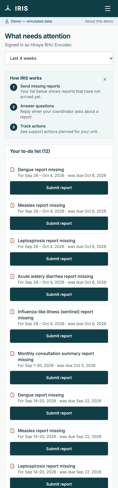
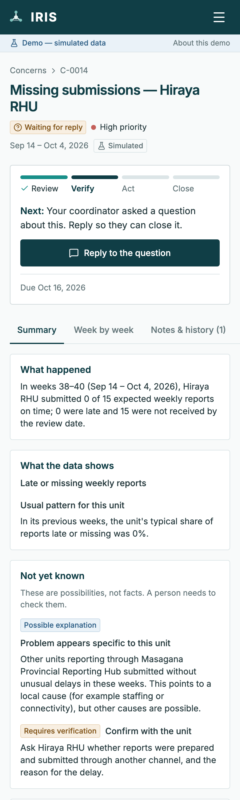
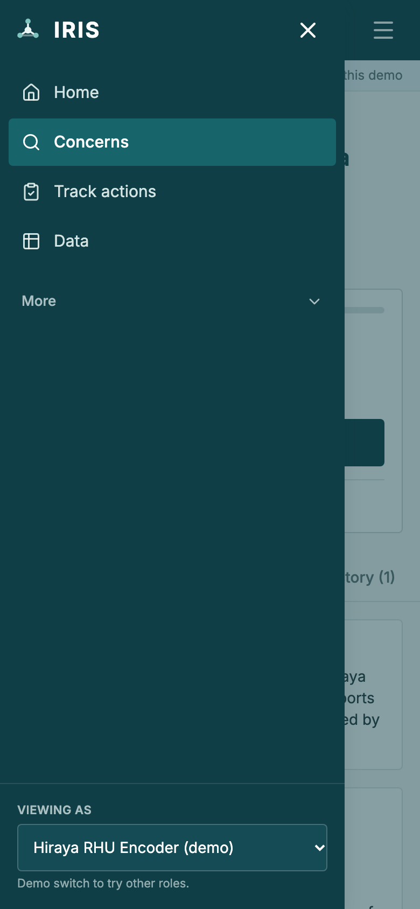
| Term | Meaning |
|---|---|
| Reporting unit | A facility that sends reports: an RHU, hospital or laboratory. |
| Reporting hub | A point through which several units send their reports, such as a provincial office. |
| Expected reports | The reports a unit should send, according to its reporting schedule. |
| Concern | A possible reporting problem found in the data, waiting for a person to review it. |
| Possible shared problem | Connected units had problems at the same time; a common cause is possible but not proven. |
| Arrived (completeness) | Reports received ÷ reports expected. |
| On time (timeliness) | Reports received by the due date ÷ reports expected. |
| Staff-hours | The time available for corrective actions, used by Plan actions. |
| Catches problems (recall) | Of the real problems, the share a method found. |
| Flags that are real (precision) | Of the weeks a method flagged, the share that were real problems. |
| False alarm | A flag on a week with no real reporting problem. |
| Simulated | Generated by the IRIS simulator for demonstration; not real data. |
IRIS has two parts: a Python server that holds the data and calculations, and a web app that people use in the browser. You need Python 3.11 or newer with uv, and Node.js 20 or newer.
git clone https://github.com/FerosC101/IRIS.git cd IRIS
cd backend uv sync uv run uvicorn iris.main:app --port 8000
The first start creates the demo database and simulated data; this takes a few seconds.
cd frontend npm install npm run dev
Open http://localhost:5180 in a browser.
cd backend && uv run pytest # server tests cd frontend && npm test # web app tests cd frontend && npm run qa:e2e # clicks through the main workflows (servers running)
With both parts running, node scripts/capture-docs.mjs (in frontend) retakes all screenshots, and node scripts/build-user-guide.mjs rebuilds this PDF from docs/user-guide.html.